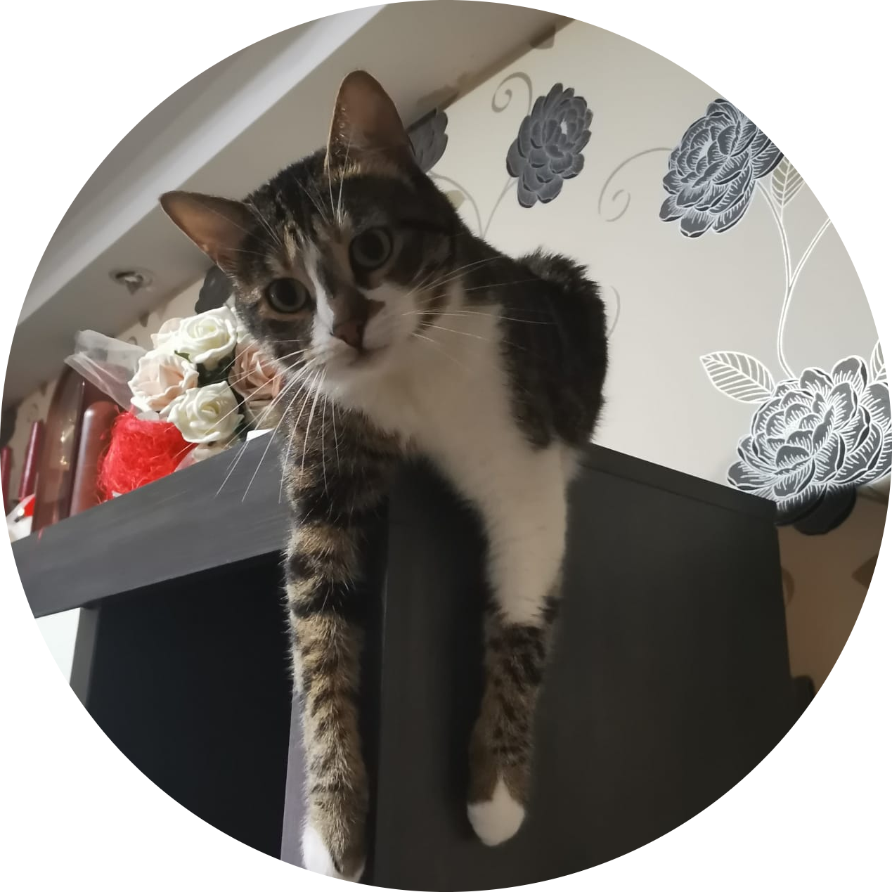

|  |
Mirel VatavuI am a Computer and Network Operator and I am working at Lacon Electronic since 13.03.2019.
|
In February 2021 I became the Teamleader of Item Data.
In 2021 I have started creating SQL Queries in SSMS and Reports in SSRS for my colleagues from Romania and Germany.
In June 2022 I have started learning Python and I have created my first 2 scripts that run on a daily basis. These scripts are using the Database from Infor through a SQL Query in order to extract the live information and upload it to a second Database.
| Dates | Work |
|---|---|
| 2019-2020 | Item Data operator |
| 2021-2022 | Teamleader Item Data |
| SSMS | ⭐⭐⭐⭐ | SSRS | ⭐⭐⭐⭐ | Python | ⭐⭐ | HTML | ⭐ | Linux Ubuntu | ⭐ |
This Website was created using Python 3.10 by Mirel Vatavu.